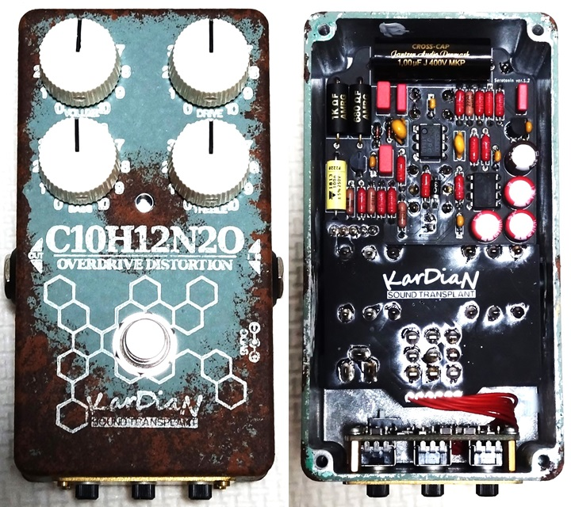
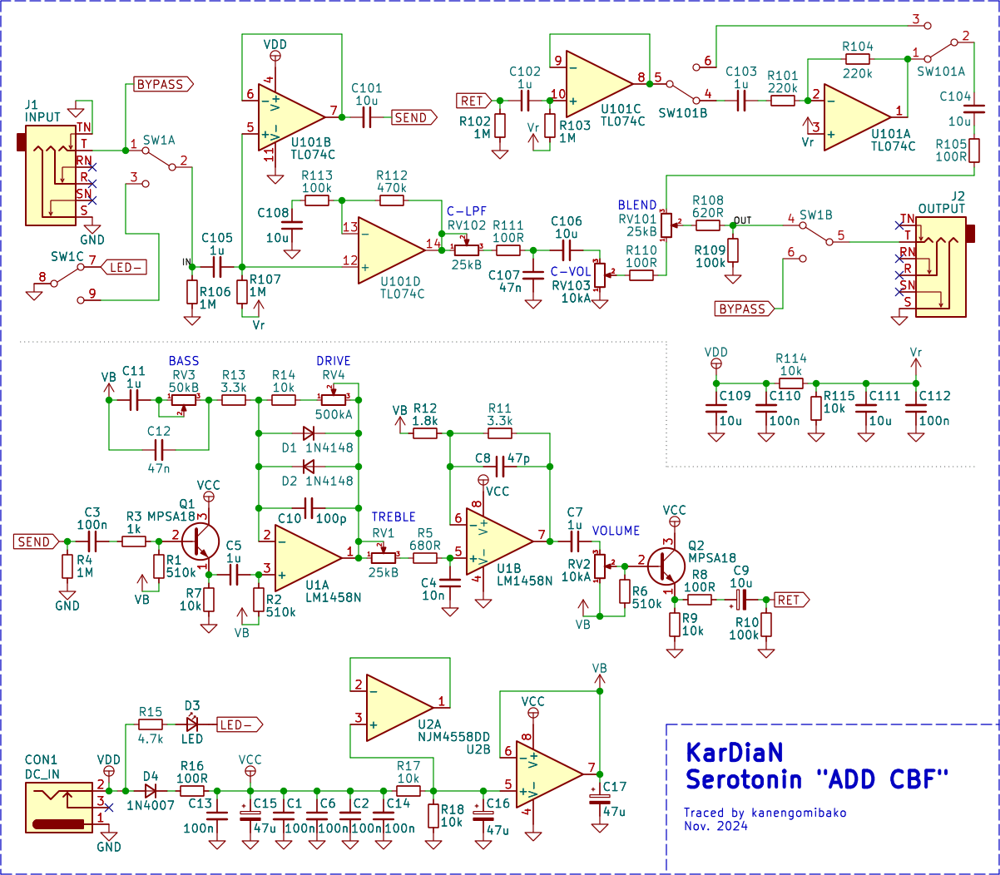
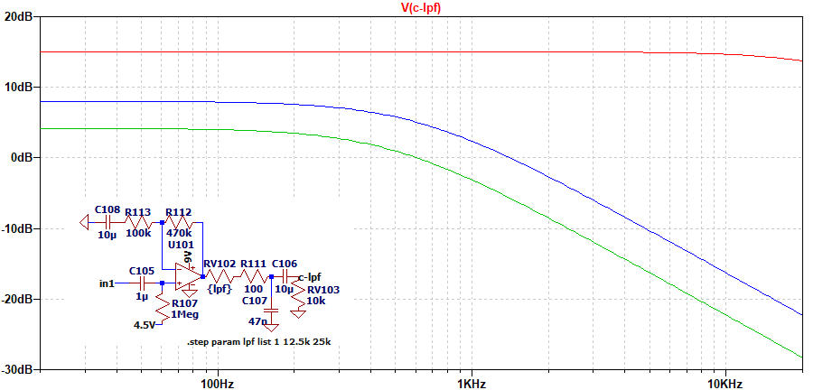
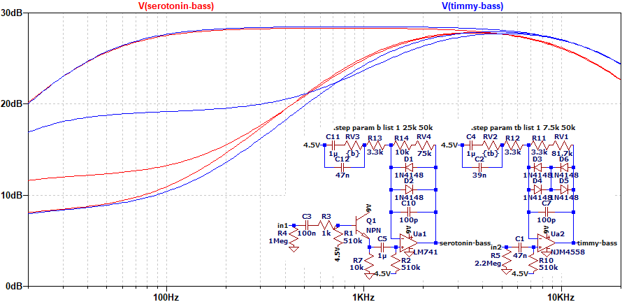
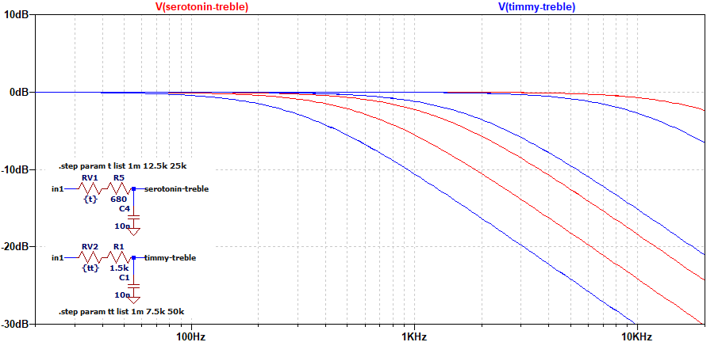

KarDiaN Serotonin
2024年11月25日 カテゴリー：修理・改造・解析

今特に人気があるメーカーのエフェクターということで、KarDiaN C10H12N2O Serotonin "ADD CBF"を解析しました。KiCadデータ（基板画像入り）とLTspiceの回路図データはGitHubにあります。
▽回路図

CBFモジュール（回路図上側）は、センド・リターンに接続したエフェクターの音（エフェクト音）とローパスフィルターをかけた原音をブレンドするというものです。エフェクト音側も必ず入力バッファーを通ることに留意が必要かと思います。SW101は、エフェクト音の位相反転スイッチです。
SerotoninはTS（チューブスクリーマー）系として紹介されていることが多いようです。実際は、Timmyの一部定数が違うものにバッファーが加わった形となっています。NJM4558DDはバイアス電圧の部分に使われ、1回路分は使われていない状態です。
他のKarDiaN北田氏設計のエフェクターとして、Altero Custom Guitars KAEDEがあります。このエフェクターのクローンと思われるAcer Overdriveの基板がPedalPCBで販売されており、回路はTimmyの定数違いとなっています。
▽シミュレーション
- C-LPF 0%→50%→100%

前段の非反転増幅のゲインが+15dB程度あります。C-LPFを下げた時は音量自体も少し低下します。
- BASS 0%→50%→100%（DRIVE 50%）

Timmyとの比較です（増幅率を同じに調整）。Serotoninの方がC12が大きい分、少し低音域寄りになります。また、LM1458は帯域幅が狭く、ゲインが高いときに高音域が下がる傾向となります。
- TREBLE 0%→50%→100%

単純なローパスフィルターです。Timmy（50kΩと10nF）やProCo RAT（100kΩと3.3nF）より高音域減少幅は小さくなります。